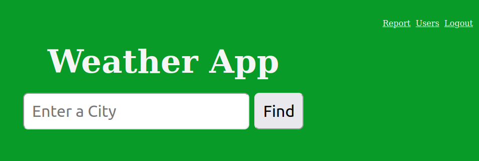
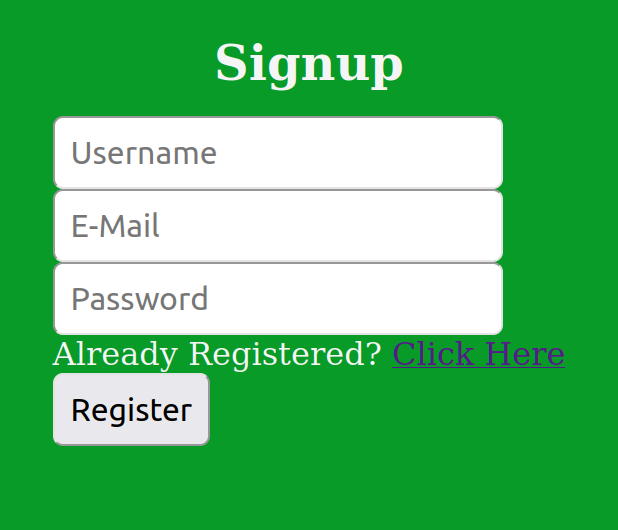
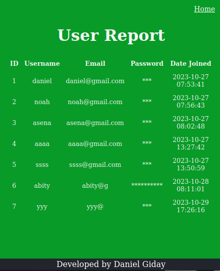

A simple web application to check real-time weather information for any location.
View ProjectEnter a city name to retrieve and display current weather conditions.
Sign up and create an account for personalized features and settings.
Designed to work on various screen sizes for a consistent user experience.
My inspiration for building the Weather App was to bring to life the process of API integration within my application. I wanted to create a user-friendly application that could fetch real-time weather data and store it in a database, showcasing my skills as a developer.
This project is particularly significant as it is part of my portfolio for Holberton School, representing my dedication to learning and applying new technologies. It has been a journey of growth and learning, and I'm excited to share this project with you.
Links members' profiles:
An introduction of member, the inspiration behind the project, a walkthrough of key features, and what's next for the project.